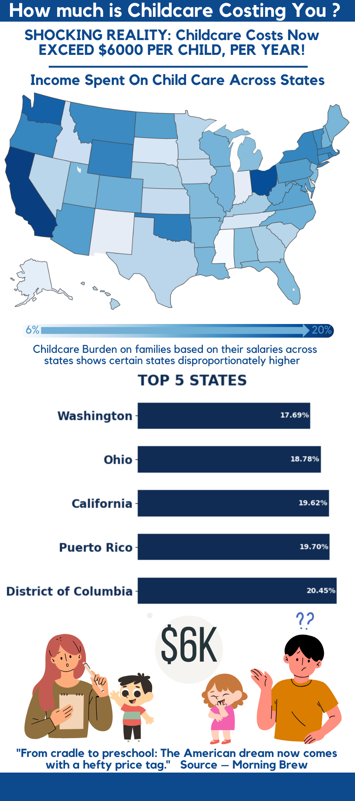

Childcare Costs & Burden
Problem Statement
This project explores the growing burden of childcare costs in the United States and its impact on families, especially those with lower incomes or single earners.
Data Used
The dataset for this project was obtained from NDCP data published by the Government.
Methodology
The project was performed across 3 different mediums
-
Infographic:
- Designed for social media and public awareness
- Simplifies the story using clear visuals, bold headlines, and emotional cues to reach a broad audience quickly
-
PowerPoint:
- Formal presentations to stakeholders.
- It goes deeper into trends, disparities, and implications with narrative content and call-to-action slides
-
Tableau Dashboard:
- Best suited for analytical users such as policymakers.
- Interactive and data-rick, allowing users to explore by income type, state, and burden
Results & Insights
The balance between simplification (infographic) and depth (Tableau) helps serve multiple audiences without compromise. The usage of various mediums served purpose of sending messages to serve across different types of audiences.
Tools & Technologies
- Languages: Python, Tableau
- Libraries: Pandas, NumPy, Matplotlib, Seaborn
- Development Environment: Jupyter Notebooks, Tableau, Canva
- Version Control: Git, GitHub